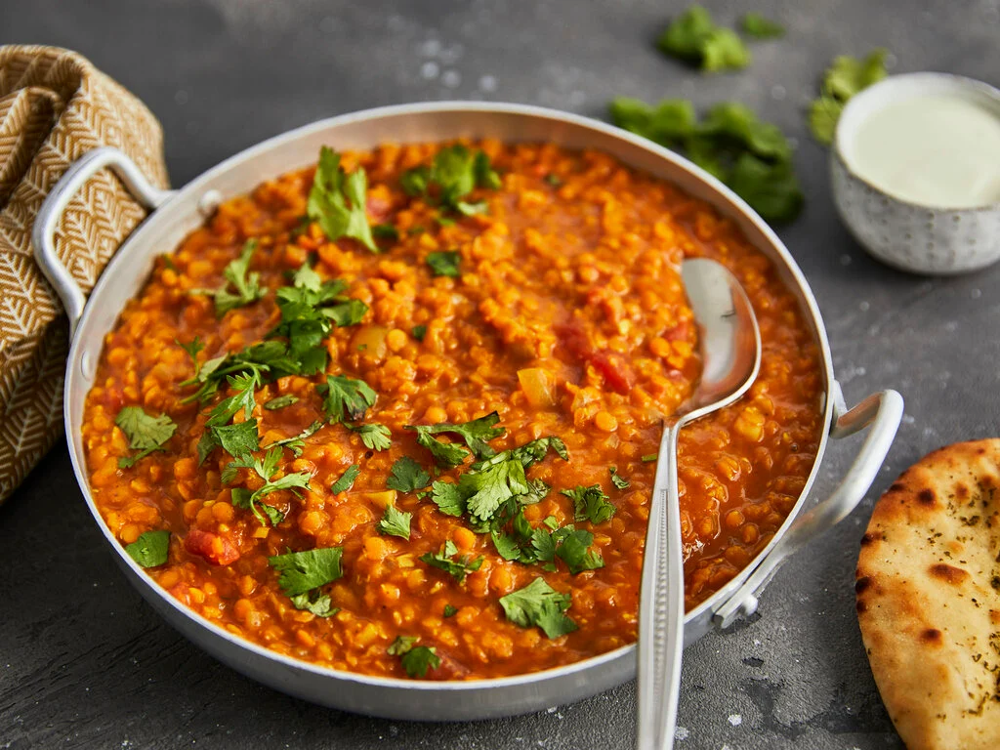

Simple Dal

Description
An indian-inspired lentil dish.
Ingredients
- Red Lentils
- Coconut Milk
- Canned Tomatoes
- Olive Oil, Garlic, Onion, Ginger, Garam Masala, Chili
- Fresh Coriander and Lemon
Steps
- Make soffrito with Garlic, Onion, Ginger, Garam Masala, Chili
- Add tomatoes and lentils, cook for 10 minutes
- Add Coconut Milk, cook for another 10 minutes
- Serve with fresh coriander and a squeeze of lemon